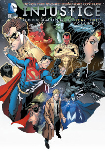
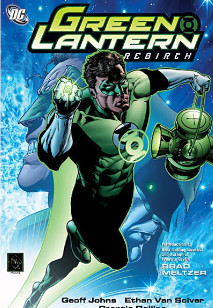
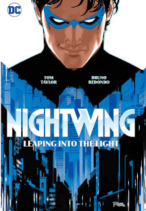
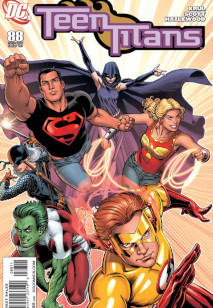

Desde pequeño, siempre tuve numerosos cómics en casa, heredados de mis primas, así teniendo acceso a casi todo lo que habían sacado de aquella de Ásterix y Obélix, Tintín y Spirou, acabando leyendo cada uno de ellos diversas veces
Más mayor, pero siguiendo siendo relativamente pequeño, con el estreno de h3e Walking Dead y viendo que estaba basado en cómics, decidí dejar de ver la serie y empezar a leer los cómics (que de aquella seguían siendo lanzados de forma mensual)
Mucho más tarde, en 2017, fue cuando me metí de lleno, empezando a leer de forma semanal prácticamente todo lo que sacaba DC y muchas series de Marvel. Muchas otras veces, también retomo cómics antiguos que se lanzaron cuando era muy pequeño o cuando no había nacido, debido a que la comunidad de cómics suele hacer muy buenas recomendaciones a la hora de hacer lecturas
Debido a que he leído un buen puñado y tengo algunos que me gustan mucho, haré solo un breve listado de mis favoritos
The Walking Dead
2003
2019
Al principio, la serie se basaba mucho en el cómic, por lo que el comienzo de la historia (protagonista se despierta en un mundo lleno de zombies y tiene que buscar a su familia) se mantiene igual, pero en determinado punto la serie y el cómic toman rumbos diferentes, haciendo el cómic a mi parecer una experiencia más entretenida y viendo como van alargando la serie, también más corta
Injustice: Gods Among Us
2013
2017
Esta gran serie de cómics se hace la pregunta de qué hubiera pasado si Superman fuese malvado, haciendo una serie que abarca 5 años en su primera entrega más luego otro par de años en su segunda, poniendo a los superhéroes de DC en diferentes situaciones con el nuevo status quo. A pesar de ser una serie que se hizo para complementar el videojuego con su mismo nombre, indudablemente de las mejores cosas que ha sacado DC en los últimos tiempos
Green Lantern: Rebirh3
2004
2005
Tras un maltrato a un personaje típico de la era dorada de los cómics, Geoff Johnns coge al personaje y crea una historia que cambia el status quo de los Green Lantern principales, dandoles mucha más personalidad y así, efectivamente, haciendo un "renacimiento" del personaje, que le sirvió para planear diferentes historias en el futuro donde los linternas verdes cobran especial protagonismo
Nightwing
2016
-
Una serie que trata sobre Dick Grayson, una persona que moverá hilos durante la serie para hacer todo lo que pueda tanto en su faceta de superhéroe como de humano. La serie actual de DC mejor valorada debido a lo humana y cercana que es esta serie, acompañada de probablemente el mejor escritor y de los mejores artistas actuales de cómics.
Teen Titans
2003
2011
Serie clásica que marcó un gran amor por los personajes, jóvenes superhéroes que tienen que abrirse camino en un mundo complicado y donde se someten a diferentes situaciones que les hacen vacilar sobre si están preparados para lo que tienen que afrontar
Adicionalmente, se puede contactar via gmail